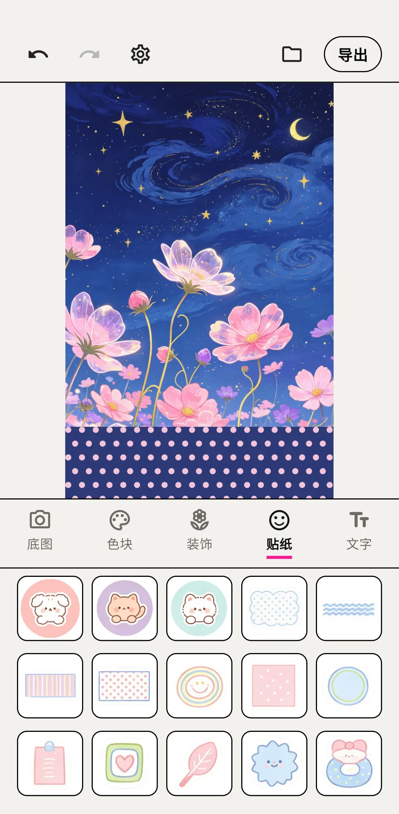
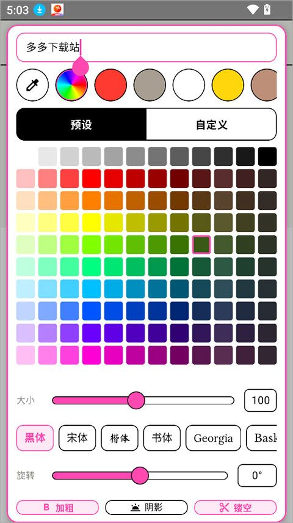

我用 WalkColor 做了三天头像，结果朋友圈以为我换了个修图师
本来只是想给头像换个花样，没想到掉进了波点拼贴的坑里。聊聊这个 App 上手三天的真实体验——好的坏的都直说。
刷小红书刷到一张波点头像，乍一看以为是 PS 画的，点进去才知道是用一个叫 WalkColor 的 App 一键生成的，它的walkcolor官网把自己定位为波点拼贴工具。说实话我一开始不信——这种"一键生成艺术感"的 App 大多是噱头，导出个滤镜就完事了。结果从官方下载拿了包试了五分钟，直接把我现在用了两年的那个半吊子修图 App 给删了。
初印象：界面干净得不像拼贴器
打开 App 第一眼，我以为进错了。没有花里胡哨的广告弹窗，没有"开通会员解锁全部形状"的横幅，就是一个画布加底部一排工具栏。形状、排列、配色、密度、尺寸，五个滑块从上到下排开，逻辑挺清晰。
选一张底图，点一下形状，画布上立刻就有了效果——波点、心形、三角形、云朵……v1.4.0 版本内置了 14 种形状，比我预想的多。我之前在别的拼贴 App 里见过波点，但也就圆形一种，WalkColor 直接把形状做成了创意核心：色块上的"洞"是什么样，整张图的气质就是什么样。

用了三天，挑两个真有用的功能说
边缘环绕排列——做头像的救命恩人
我一开始做头像犯了个低级错误：选了心形形状，排列模式随手点了"随机"。结果心形散落在整张脸上，导出之后朋友说"你这头像为什么脸上有窟窿"。后来才知道，WalkColor 有个叫"边缘环绕"的排列模式——它自动把形状挤到画布四周，中央区域完整留空，刚好卡在脸的轮廓外面。
就这一个功能，让我做头像的效率提升了十倍。之前用其他 App 得手动抠出脸部区域再遮罩，现在直接选底图 → 边缘环绕 → 选形状 → 调密度，一分钟出图。小红书评论区说"用 WalkColor 做的头像一天被问十几次链接"，这话真不夸张。
文字阴影——不是装饰，是功能
WalkColor 的文字功能经常被忽略，很多人以为它就是个波点生成器。但它内置了 13 款中英文字体，加阴影之后可以当小海报用。我试了一张：莫兰迪粉灰底色 + 奶油白波点 + 墨绿色圆体字 + 深色阴影，导出之后居然被朋友拿去当朋友圈封面了。
阴影这个设计我挺喜欢。很多拼贴 App 加文字就是纯颜色，在花哨底色上根本看不清楚。WalkColor 把阴影做成了默认选项，浅色底色上深色字浮起来，深色底色上浅色字不贴背景——这个细节比我用过的大多数修图 App 都考虑得周到。不过要注意 Android 版目前只有阴影开关，iOS 版已经能调方向和距离了，这点后续应该会补齐。

哪些形状好用，哪些容易踩坑
14 种形状我差不多都试了一遍，后来翻了walkcolor文档才知道 v1.4.0 是从 12 种扩到 14 种的，说点实际感受。
波点是真万能，什么底图套进去都不违和。心形和星形情绪太强，适合情人节或宠物头像，但用多了会腻。三角形、正方形、六边形这些几何形状，配边缘环绕排列做头像边框特别对味，适合酷感风格。还有个云朵形状，和莫兰迪配色搭一起很治愈，iOS 版 v2.26 新增的，Android 版同步跟上了。
有个叫"仙女棒散布"的形状，v2.30 才加的，Y2K 风格首选——像散落的小星星，配合金属粉和薄荷绿配色，撒在脸周围像闪光粉。不过这个形状密度不能调太高，超过 50 就乱了。
适合谁，不适合谁
如果你只是想给头像换个花样、给手机壁纸加层波点效果，WalkColor 完全够用，甚至会超出预期。边缘环绕排列、14 种形状、13 款字体，这一套组合拳下来，做头像做壁纸都能出活。
但如果你想做复杂的拼贴海报、需要图层管理或者高级抠图，那 WalkColor 可能不是你的菜。它定位就是波点拼贴器，专注在一个小而美的场景里，没有往全能修图的方向走。另外 Android 版目前功能比 iOS 版精简一些，阴影只能开关不能调参数，字体也少了几款预设。
最后说句实在的
我以前对这类"一键生成艺术感"的 App 没什么好感，总觉得是流水线产垃圾。但 WalkColor 让我改变了看法——它没在堆功能，而是把波点拼贴这一件事做透了。形状选得全、排列模式贴心、阴影这种细节也考虑到了，用起来不闹心。
有需要的话可以去它的官网看看，安装包从官方下载拿就行，深入玩法和参数调整文档里写得挺细。我这几天做了十几个头像和壁纸，基本上每次打开都能调出点新东西。这种"小工具但做得用心"的产品，值得留着占个手机空间。对了，这套波点拼贴的资料我顺手也同步到了三个代码托管平台，GitHub上能拿到完整版，国内访问优先 Gitee 和 GitCode。